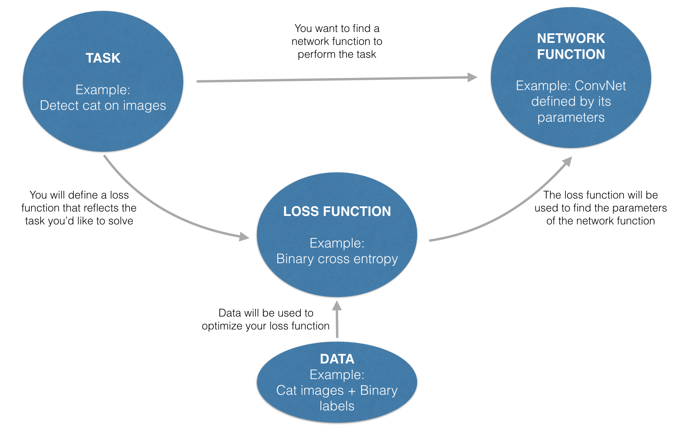
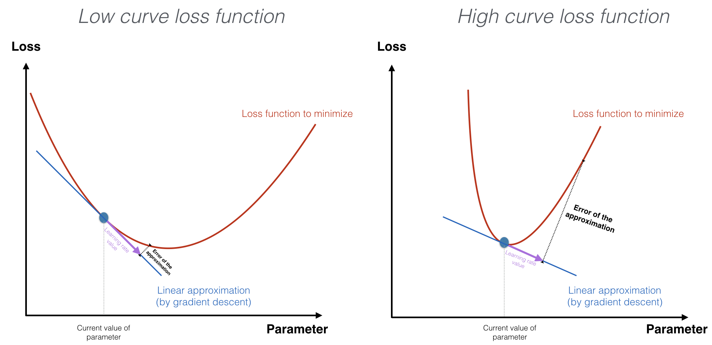

In machine learning, you start by defining a task and a model consisting of an architecture and parameters. For a given architecture, the values of the parameters determine how accurately the model performs the task. But how do you find good values? By defining a loss function that evaluates how well the model performs. The goal is to optimize the loss function and thereby to find parameter values that close the gap between the model's predictions and reality.
I Setting up the optimization problem
The loss function will be different in different tasks depending on the output desired. How you define it has a major influence on how the model will train and perform. Let's consider two examples:
Example 1: House price prediction
Say your task is to predict the price of houses based on features such as floor area, number of bedrooms, and ceiling height. The loss function can be summarized by the sentence:
Given a set of house features, the square of the difference between your prediction and the actual price should be as small as possible.
You define the loss function aswhere is your predicted price and is the actual price, also known as ground truth.
Example 2: object detection
Let's consider a more complex example. Say your task is to detect (that is, localize and identify) cars and pedestrians in images. The loss function should frame the following sentence in mathematical terms:
Given an image, predict bounding boxes (bbox) that contain all the cars and pedestrians in the image. The predicted boxes should match the size, position and class of the actual objects.
In mathematical terms, a possible loss function (Redmon et al., 2016) is:
This loss function depends on:
- Parameters of the network (weights and biases)
- Input to the network (images)
- Ground truth corresponding to the input (labels comprising bounding boxes and classes)
For a fixed value of the input batch and ground-truth batch, the loss has a landscape that depends on the parameters of the network. It is difficult to visualize the loss landscape (against the parameters) if there are more than two parameters. However, the landscape does exist and our goal is to find the point where the loss value is minimal. Updating the parameter values will move the loss value either closer to or farther from the target minimum point.
By definition, this function L has a low value when the model performs well on the task.
The relationship between the model and the loss function
It is important to distinguish between the function that will perform the task (the model) and the function you are optimizing (the loss function).
- The model is an architecture and a set of parameters that approximates a real function that performs the task. The optimized parameter values will enable the model to perform the task with relative accuracy.
- The loss function quantifies how accurately the model performs on given data set. Its value depends on the model's parameter values.
At this point, good parameter values are unknown. However, you have a formula for the loss function. Optimize that, and you will find good parameter values. The way to do this is to feed the training data set into the model, find the loss function, and adjust the parameters to make it as small as possible. This is usually an iterative process.
In summary, the way you define the loss function will dictate the performance of your model on the task at hand. The diagram below illustrates the process of finding a model that performs the task at hand.
Do you know the mathematical formula that allows you to detect cats in images? Probably not, but using data you can find a function that performs this task. It turns out that a convolutional architecture with the right parameters defines a function that can perform this task well.
II Running the optimization process
In this section, assume that you have already chosen a task and a loss function. You will minimize the loss function to find good parameter values.
Initialization, learning rate, and batch size
First, initialize the parameters so you have a starting point for optimization. You also need to choose hyperparameters such as learning rate and batch size. They will have an important influence on the optimization.
In the visualization below, you can play with the starting point of initialization, learning rate, and batch size. With these parameters, you will fit a linear regression on a set of 300 data points using the gradient descent optimization algorithm. For more information on gradient descent optimization, see the Deep Learning Specialization (Course 1: Neural Networks and Deep Learning, Week 2: Logistic Regression as a Neural Network.) Here are some questions to ask yourself:
- Why does the loss landscape look like this?
- What is the red dot?
- Why can your optimization end up with a cost value lower than the ground truth line?
- What is the impact of the learning rate on the optimization?
- What is the impact of the batch size on the optimization?
Here are some takeaways from the visualization:
a) Initialization
A good initialization can make your optimization quicker and converge to the correct minimum (in the case where there are several minima). If you want to learn more about initialization, read our AI Note on Initializing neural networks.
b) Learning rate
The choice of learning rate influences the convergence of your optimization.
- If the learning rate is too small, your updates are small and the optimization is slow. Furthermore, you’re likely to settle into an inappropriate local minimum. (We use this term because, in machine learning optimization, the optimization is often non-convex and unlikely to converge to the global minimum.)
- If the learning rate is too large, your updates will be large and the optimization is likely to diverge.
- If the learning rate is appropriate, your updates are appropriate and the optimization will converge.
The choice of learning rate depends on the curvature of your loss function. Gradient descent makes a linear approximation of the loss function in a given point. It then moves downhill along the approximation of the loss function. In the case where the loss is highly curved, the larger your step size (learning rate), the larger the error of your approximation. Taking small steps reduces the error1.
It is common practice to start with a large learning rate and decay it during training. Choosing the right decay (how often? by how much?) is non-trivial. An excessively aggressive decay schedule slows the progress towards the optimum, while a slow-paced decay schedule leads to chaotic updates with small improvements.
Here we say inappropriate local minimum because in machine learning optimization, the optimzation is often non-convex and unlikely to converge to the global minimum.
c) Batch size
The right choice of batch size is crucial to ensure convergence and generalization of your network. Although there’s been some research2 on how to choose the batch size, there’s no consensus yet on what batch size to choose. In practice, you can use a hyperparameter search to choose a good batch size.
Recent research into batch size has uncovered the following principles:
- The batch size determines the frequency of your updates. The smaller the batches, the more — though quicker — the updates.
- The larger the batch size, the more accurate the gradient of the loss will be with respect to the parameters. That is, the direction of the update is most likely going down the local slope of the loss landscape.
- Choosing the largest batch size that fits in GPU memory results in efficient parallelization and usually accelerates training.
- However, large batch sizes can sometimes hurt the ability to generalize.
In choosing batch size, there’s a balance to be struck depending on the task you’re trying to achieve. Recall that the input batch is an input to the cost function. Large batch size typically leads to sharper cost function surfaces than a small batch size, as Keskar et al. find in their paper, On large-batch training for deep learning: generalization gap and sharp minima. Here's a figure comparing a flat and a sharp minumum. Flat cost surfaces (and thus small batche sizes) are preferred because they lead to good generalization without requiring high precision.

In practice, to find hyperparameters such as learning rate and batch size, you should perform hyperparameter search. Batch size and learning rate are two ways to achieve the same outcome, according to Smith, Kindermans et al. in Don't Decay the Learning Rate, Increase the Batch Size. They argue that the benefits of decaying the learning rate can be achieved by increasing batch size during training. So if you change batch size, you may also need to change learning rate. The efficient use of vast batch sizes notably reduces the number of parameter updates required to train a model.
d) Iterative update
Now that you have a starting point, a learning rate, and a batch size, it’s time to iteratively update the parameters to move toward the minimum of the loss function.
The optimization algorithm is also a core choice. You can play with various optimizers in the visualization below. That will help you build intuition regarding the pros and cons of each.
The choice of optimizer influences both the speed of convergence and whether it occurs. Several alternatives to the classic gradient descent algorithms have been developed in the past few years and are listed in the table below. (Notation: )
| Optimizer | Update rule | Attribute |
|---|---|---|
| (Stochastic) Gradient Descent |
|
|
| Momentum |
|
|
| RMSprop |
|
|
| Adam |
|
Online optimization is when updates must be made with incomplete knowledge of the future (as in Stochastic Gradient Descent optimization).
Non-stationary setting essentially describes inflection points (where the concavity of the landscape changes) for which the gradient is zero in some, but not all, directions.
Despite performing well in the initial portion of training, adaptive optimization methods such as Adam or RMSprop have been found to generalize poorly at later stages of training compared to Stochastic Gradient Descent (SGD). In Improving Generalization Performance by Switching from Adam to SGD, Keskar et al. investigate a hybrid strategy that begins training with an adaptive method and switches to SGD when appropriate.
You can find more information about these optimizers in the Deep Learning Specialization (Course 2: Improving your Deep Neural Network, Week 2: Optimization) on Coursera.
Conclusion
Exploring the optimization methods and hyperparameters presented above can help you build intuition for optimizing networks for your own tasks. Intuitively understanding the sensitivity of the loss optimization for these hyperparameters (learning rate, batch size, optimizer, and so on) is important during hyperparameter search. Combined with the right method (random search or Bayesian optimization), it will help you iterate through your search to find the right model.